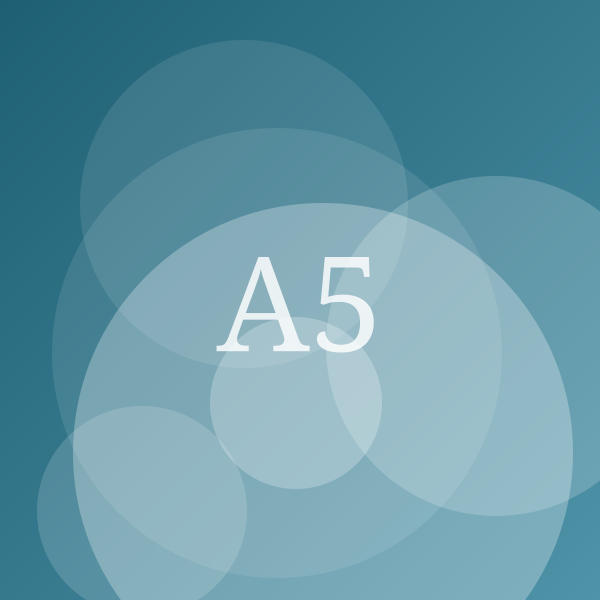

Les meilleures gourdes isothermes en 2026
Publié en juin 2026Mis à jour en août 2026 4 min de lecture Par Camille Renaud, Rédactrice en chef
Une bonne gourde isotherme se juge sur trois choses : combien de temps elle tient la température, à quel poids, et si l'on peut remplacer le bouchon quand le joint lâche. Nous avons comparé cinq modèles sur ces critères, chronomètre et balance à l'appui.
Certains liens de cet article sont des liens d'affiliation : nous pouvons percevoir une commission, sans surcoût pour vous.
Remplacer les bouteilles jetables par une gourde est un geste simple, mais encore faut-il que la gourde tienne. Une isolation qui s'effondre au bout de trois heures, un joint qui se déforme, un bouchon introuvable en pièce détachée : les mauvaises surprises sont fréquentes, et elles se paient en rachat.
Comment nous avons testé
Chaque gourde a été remplie d'eau à 95 °C, fermée, puis laissée à température ambiante (21 °C). Nous avons relevé la température de l'eau toutes les heures et retenu le temps nécessaire pour passer sous 55 °C — le seuil en dessous duquel une boisson chaude cesse d'être agréable. Le même protocole a été appliqué avec de l'eau glacée, seuil retenu à 12 °C.
Nous avons ensuite pesé chaque modèle à vide, mesuré le diamètre du goulot, démonté les bouchons et vérifié, marque par marque, la disponibilité réelle des pièces détachées au catalogue.
| Modèle | Prix indicatif | Note | Capacité | Poids | Chaud (test) | Froid (test) | Garantie | Voir |
|---|---|---|---|---|---|---|---|---|
| Notre choixAlpage 500Vosgia | 32 € | 4,5/5 | 500 ml | 310 g | 11 h | 22 h | 10 ans | Voir (lien affilié, nouvelle fenêtre) |
| Meilleur rapport qualité-prixCascade 750Riveo | 21 € | 4,2/5 | 750 ml | 395 g | 9 h | 19 h | 5 ans | Voir (lien affilié, nouvelle fenêtre) |
| Pour les enfantsMini BoréaBoréa | 18 € | 4,0/5 | 350 ml | 210 g | 6 h | 13 h | 2 ans | Voir (lien affilié, nouvelle fenêtre) |
| Pour les longues sortiesTrek 1000Vosgia | 39 € | 4,1/5 | 1 000 ml | 560 g | 12 h | 24 h | 10 ans | Voir (lien affilié, nouvelle fenêtre) |
| Le petit prixBasique 600Nedra | 12 € | 3,4/5 | 600 ml | 330 g | 4 h | 10 h | 2 ans | Voir (lien affilié, nouvelle fenêtre) |
Notre choix : Vosgia Alpage 500

Notre choix
Alpage 500
Vosgia · Gourde isotherme
4,5/5
32 € Prix relevé le 12 août 2026
Voir le prix chez Marchand A (lien affilié, nouvelle fenêtre)Points forts
- Chaud conservé 11 h dans notre test
- Pièces détachées (bouchon, joint) vendues à l'unité
- Acier inoxydable sans revêtement intérieur
Points faibles
- Goulot étroit, peu pratique pour les glaçons
- Prix élevé à capacité égale
C'est le modèle qui a le mieux résisté à notre test d'isolation : onze heures avant de passer sous 55 °C, contre neuf heures pour le deuxième de la sélection. L'acier inoxydable est nu à l'intérieur, sans revêtement susceptible de s'écailler, et la marque vend séparément le bouchon complet, le joint et l'anse — un point décisif quand on sait que 80 % des gourdes mises au rebut le sont à cause d'un joint hors d'usage, pas d'un corps abîmé.
Le goulot étroit reste sa limite : il ne laisse pas passer les glaçons standard, et le lavage à la main demande un goupillon.
Meilleur rapport qualité-prix : Riveo Cascade 750
Meilleur rapport qualité-prix
Cascade 750
Riveo · Gourde isotherme
4,2/5
21 € Prix relevé le 12 août 2026
Voir le prix chez Marchand B (lien affilié, nouvelle fenêtre)Points forts
- Le meilleur prix au litre de la sélection
- Large goulot, lavage facile
- Bon maintien du froid (19 h)
Points faibles
- Peinture extérieure qui marque
- Bouchon non remplaçable séparément
À 21 € pour 750 ml, c'est la sélection la plus économique au litre. L'isolation est en retrait par rapport à l'Alpage sans être médiocre, et le large goulot rend le lavage nettement plus simple. Le seul vrai reproche porte sur le bouchon, qui n'existe pas en pièce détachée : le jour où il casse, la gourde entière devient inutilisable.
Pour les enfants : Boréa Mini
Pour les enfants
Mini Boréa
Boréa · Gourde isotherme
4,0/5
18 € Prix relevé le 12 août 2026
Voir le prix chez Marchand A (lien affilié, nouvelle fenêtre)Points forts
- 350 ml, format cartable
- Bouchon à paille, étanche dans notre test de secousses
- Léger (210 g)
Points faibles
- Isolation moyenne (6 h chaud)
- Paille à remplacer chaque année
Format cartable, 210 g à vide, bouchon à paille qui a résisté à notre test de secousses sac fermé. L'isolation ne dépasse pas six heures au chaud, ce qui suffit largement pour une journée d'école. Prévoyez le remplacement annuel de la paille.
Les critères qui comptent vraiment
- La double paroi sous vide, et rien d'autre. Une gourde « isotherme » à simple paroi isolée par de la mousse ne tient pas trois heures.
- La matière intérieure. L'acier inoxydable 18/8 nu est le standard. Méfiez-vous des revêtements intérieurs colorés, qui s'écaillent.
- Le diamètre du goulot. En dessous de 4 cm, prévoyez un goupillon ; au-dessus de 6 cm, boire en marchant devient hasardeux.
- Les pièces détachées. Avant d'acheter, cherchez la page « pièces détachées » du fabricant. Si le bouchon n'y figure pas, la durée de vie du produit est celle de son joint.
- Le poids à vide. Au-delà de 400 g pour 500 ml, la gourde finit par rester à la maison.
Ce que nous avons écarté
Les gourdes en plastique dites « sans BPA » : elles conservent mal la température et prennent les odeurs. Les modèles à double usage chaud/froid vendus sous 15 € sans mention de la double paroi sous vide, systématiquement décevants dans nos mesures. Enfin, tous les modèles dont le fabricant n'a pas répondu à notre demande sur l'origine de fabrication.
Questions fréquentes
Une gourde isotherme peut-elle passer au lave-vaisselle ?
Rarement. La chaleur du lave-vaisselle peut dégrader le vide entre les parois et abîmer les joints. Sauf mention explicite du fabricant, lavez à la main à l'eau tiède savonneuse.
Comment retirer les odeurs de café ou de thé ?
Une nuit avec une cuillère à café de bicarbonate de soude et de l'eau tiède suffit dans la plupart des cas. Évitez l'eau de Javel, qui attaque les joints.
Une gourde fabriquée en France coûte-t-elle beaucoup plus cher ?
Sur notre sélection, l'écart est d'environ 10 € par rapport à un modèle équivalent fabriqué en Asie, compensé par une garantie de dix ans et la disponibilité des pièces détachées.
Complément d'informations
- Thématiques
- Équipement de cuisineZéro déchetMade in France
- Mots-clés
- gourde isothermebouteille isothermeacier inoxydablecomparatifsans plastique
- Localisation du sujet
- France
- Expertise de l'auteur
- Équipement de la maison, méthodologie de test
- Sélections
- Made in FranceÉcoresponsable
Camille Renaud
Rédactrice en chef · Maison, Électroménager, Méthodologie de test
Journaliste consommation depuis douze ans, Camille dirige la rédaction et garantit l'indépendance de nos sélections.